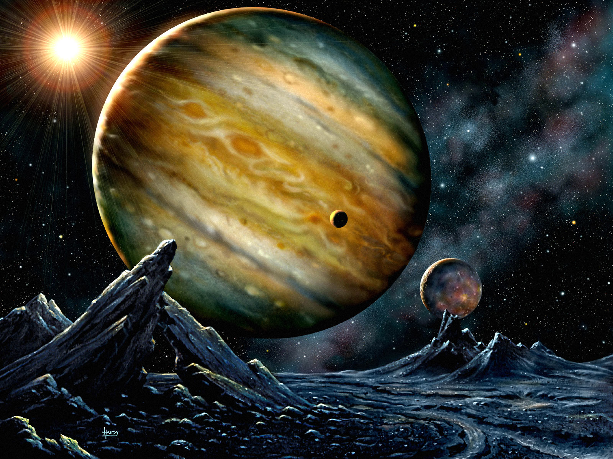
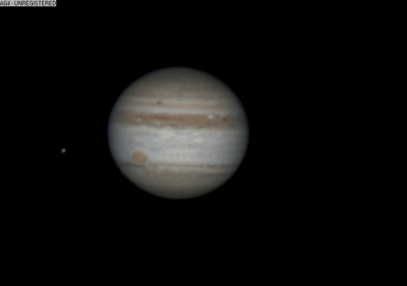

Jupiter

- Jupiter, se roteste in jurul axei in 9 ore si 48 min.
- Se invarte 11,86 ani in jurul Soarelui.
- Temperatura: -95 ° C.
- Diametrul planetei: 142,796 km.
- Gravitatia: 3 x decat cea a Pamantului.
- Compozitia atmosferei: hidrogen si heliu.
- Are 63 luni descoperite pana acum, si 1 inel mic.
- A fost vizitat de Pioneer 10 & 11, Voyager 1 & 2, si sonda spatiala Galileo.

Jupiter este a cincea planeta de la Soare si este cea mai mare dintre toate planetele din Sistemul solar. Are diametrul de 11 ori mai mare decât cel al Pamântului, o masa de 318 ori mai mare si un volum de 1300 ori mai mare.